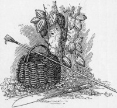

 In the last chapter I gave a brief account of the cultivation of cacao. I did not deal with forking, spraying, cutlassing, weeding, and so forth, as it would lead us too far into purely technical discussions. I propose we assume that the planter has managed his estate well, and that the plantation is before us looking very healthy and full of fruit waiting to be picked. The question arises: How shall we gather it? Shall we shake the tree? Cacao pods do not fall off the tree even when over-ripe. Shall we knock off or pluck the pods? To do so would make a scar on the trunk of the tree, and these wounds are dangerous in tropical climates, as they are often attacked by canker. A sharp machete or cutlass is used to cut off the pods which grow on the lower part of the trunk. As the tree is not often strong enough to bear a man, climbing is out of the question, and a knife on a pole is used for cutting off the pods on the upper branches. Various shaped knives are used by different planters, a common and efficient kind (see drawing), resembles a hand of steel, with the thumb as a hook, so that the pod-stalk can be cut either by a push or a pull. A good deal of ingenuity has been expended in devising a "foolproof" picker which shall render easy the cutting of the pod-stalk and yet not cut or damage the bark of the tree. A good example is the Agostini picker, which was approved by Hart.
The gathering of the fruits of one's labour is a pleasant task, which occurs generally only at rare intervals. Cacao is gathered the whole year round. There is, however, in most districts one principal harvest period, and a subsidiary harvest.
With cacao in the tropics, as with corn in England, the gathering of the harvest is a delight to lovers of the beautiful. It is a great charm of the cacao plantation that the trees are so closely planted that nowhere does the sunlight find between the foliage a space larger than a man's hand. After the universal glare outside, it seems dark under the cacao, although the ground is bright with dappled sunshine. You hear a noise of talking, of rustling leaves, and falling pods. You come upon a band of coolies or negroes. One near you carries a long bamboo—as long as a fishing rod—with a knife at the end. With a lithe movement he inserts it between the boughs, and, by giving it a sharp jerk, neatly cuts the stalk of a pod, which falls from the tree to the ground. Only the ripe pods must be picked. To do this, not only must the picker's aim be true, but he must also have a good eye for colour. Whether the pods be red or green, as soon as the colour begins to be tinted with yellow it is ripe for picking. This change occurs first along the furrows in the pod. Fewer unripe pods would be gathered if only one kind of pod were grown on one plantation. The confusion of kinds and colours which is often found makes sound judgment very difficult. That the men generally judge correctly the ripeness of pods high in the trees is something to wonder at. The pickers pass on, strewing the earth with ripe pods. They are followed by the graceful, dark-skinned girls, who gather one by one the fallen pods from the greenery, until their baskets are full. Sometimes a basketful is too heavy and the girl cannot comfortably lift it on to her head, but when one of the men has helped her to place it there, she carries it lightly enough. She trips through the trees, her bracelets jingling, and tumbles the pods on to the heap. Once one has seen a great heap of cacao pods it glows in one's memory: anything more rich, more daring in the way of colour one's eye is unlikely to light on. The artist, seeking only an æsthetic effect would be content with this for the consummation and would wish the pods to remain unbroken.
There are planters who believe that the product is improved by leaving the gathered pods several days before breaking; and they would follow the practice, but for the risk of losses by theft. Hence the pods are generally broken on the same day as they are gathered. The primitive methods of breaking with a club or by banging on a hard surface are happily little used. Masson of New York made pod-breaking machines, and Sir George Watt has recently invented an ingenious machine for squeezing the beans out of the pod, but at present the extraction is done almost universally by hand, either by men or women. A knife which would cut the husk of the pod and was so constructed that it could not injure the beans within, would be a useful invention. The human extractor has the advantage that he or she can distinguish the diseased, unripe or germinated beans and separate them from the good ones. Picture the men sitting round the heap of pods and, farther out, in a larger circle, twice as many girls with baskets. The man breaks the pod and the girls extract the beans. The man takes the pod in his left hand and gives it a sharp slash with a small cutlass, just cutting through the tough shell of the pod, but not into the beans inside; and then gives the blade, which he has embedded in the shell, a twisting jerk, so that the pod breaks in two with a crisp crack. The girls take the broken pods and scoop out the snow-like beans with a flat wooden spoon or a piece of rib-bone, the beans being pulled off the stringy core (or placenta) which holds them together. The beans are put preferably into baskets or, failing these, on to broad banana leaves, which are used as trays.
Practice renders these processes cheerful and easy work, often performed to an accompaniment of laughing and chattering.
MEN BREAKING PODS, GIRLS SCOOPING OUT BEANS, AND MULES WAITING WITH BASKETS TO CONVEY THE CACAO TO THE FERMENTARY.
I allow myself the pleasure of thinking that I am causing some of my readers a little surprise when I tell them that cacao is fermented, and that the fermentation produces alcohol. As I mentioned above, the cacao bean is covered with a fruity pulp. The bean as it comes from the pod is moist, whilst the pulp is full of juice. It would be impossible to convey it to Europe in this condition; it would decompose, and, when it reached its destination, would be worthless. In order that a product can be handled commercially it is desirable to have it in such a condition that it does not change, and thus with cacao it becomes necessary to get rid of the pulp, and, whilst this may be done by washing or simply by drying, experience has shown that the finest and driest product is obtained when the drying is preceded by fermentation. Just as broken grapes will ferment, so will the fruity pulp of the cacao bean. Present day fermentaries are simply convenient places for storing the cacao whilst the process goes on. In the process of fermentation, Dr. Chittenden says the beans are "stewed in their own juice." This may be expressed less picturesquely but more accurately by saying the beans are warmed by the heat of their own fermenting pulp, from which they absorb liquid.
In Trinidad the cacao which the girls have scooped out into the baskets is emptied into larger baskets, two of which are "crooked" on a mule's back, and carried thus to the fermentary. In Surinam it is conveyed by boat, and in San Thomé by trucks, which run on Decauville railways.
The period of fermentation and the receptacle to hold the cacao vary from country to country. With cacao of the criollo type only one or two days fermentation is required, and as a result, in Ecuador and Ceylon, the cacao is simply put in heaps on a suitable floor. In Trinidad and the majority of other cacao-producing areas, where the forastero variety predominates, from five to nine days are required. The cacao is put into the "sweat" boxes and covered with banana or plantain leaves to keep in the heat. The boxes may measure four feet each way and be made of sweet-smelling cedar wood. As is usual with fermentation, the temperature begins to rise, and if you thrust your hands into the fermenting beans you find they are as hot and mucilaginous as a poultice.
| Time. | Temperature. | |
| When put in | 25° C. or 77° F. | |
| After 1 day | 30° C. or 89° F. | |
| After 2 days | 37° C. or 98° F. | |
| After 3 days | 47° C. or 115° F. | |
| (After the third day the heat is maintained, but the temperature rises very little.) | ||
The temperature is the simplest guide to the amount of fermentation taking place, and the uniformity of the temperature in all parts of the mass is desirable, as showing that all parts are fermenting evenly. The cacao is usually shovelled from one box to another every one or two days. The chief object of this operation is to mix the cacao and prevent merely local fermentation. To make mixing easy one ingenious planter uses a cylindrical vessel which can be turned about on its axis.
FERMENTING BOXES, JAVA. From the last box the beans are shovelled into the washing basin.
(Reproduced from van Hall's Cocoa, by permission of Messrs. Macmillan & Co.)
In other places, for example in Java, the boxes are arranged as a series of steps, so that the cacao is transferred with little labour from the higher to the lower. In San Thomé the cacao is placed on the plantation direct into trucks, which are covered with plaintain leaves, and run on rails through the plantation right into the fermentary. Some day some enterprising firm will build a fermentary in portable sections easily erected, and with some simple mechanical mixer to replace the present laborious method of turning the beans by manual labour.
The general conditions[1] for a good fermentation are:
No entirely satisfactory theory of the changes in cacao due to fermentation has yet been established. It is known that the sugary pulp outside the beans ferments in a similar way to other fruit pulp, save that for a yeast fermentation the temperature rises unusually high (in three days to 47 degrees C.), and also that there are parallel and more important changes in the interior of the bean. The difficulty of establishing a complete theory of fermentation of cacao has not daunted the scientists, for they know that the roses of philosophy are gathered by just those who can grasp the thorniest problems. Success, however, is so far only partial, as can be seen by consulting the best introduction on the subject, the admirable collection of essays on The Fermentation of Cacao, edited by H. Hamel Smith. Here the reader will find the valuable contributions of Fickendey, Loew, Nicholls, Preyer, Schulte im Hofe, and Sack.
The obvious changes which occur in the breaking down of the fruity exterior of the bean should be carefully distinguished from the subtle changes in the bean itself. Let us consider them separately:—
(a) Changes in the Pulp.—Just as grape-pulp ferments and changes to wine, and just as weak wine if left exposed becomes sour; so the fruity sugary pulp outside the cacao bean on exposure gives off bubbles of carbon dioxide, becomes alcoholic, and later becomes acid. The acid produced is generally the pleasant vinegar acid (acetic acid), but under some circumstances it may be lactic acid, or the rancid-smelling butyric acid. Kismet! The planter trusts to nature to provide the right kind of fermentation. This fermentation is set up and carried on by the minute organisms (yeasts, bacteria, etc.), which chance to fall on the beans from the air or come from the sides of the receptacle. One yeast-cell does not make a fermentation, and as no yeast is added a day is wasted whilst any yeasts which happen to be present are multiplying to an army large enough to produce a visible effect on the pulp. Any organism which happens to be on the pod, in the air, or on the inside of the fermentary will multiply in the pulp, if the pulp contains suitable nourishment. Each kind of organism produces its own characteristic changes. It would thus appear a miracle if the same substances were always produced. Yet, just as grape-juice left exposed to every micro-organism of the air, generally changes in the direction of wine more or less good, so the pulp of cacao tends, broadly speaking, to ferment in one way. It would, however, be a serious error to assume that exactly the same kind of fermentation takes place in any two fermentaries in the world, and the maximum variation must be considerable. As the pulp ferments, it is destroyed; it gradually changes from white to brown, and a liquid ("sweatings") flows away from it. The "sweatings" taste like sweet cider. At present this is allowed to run away through holes in the bottom of the box, and no care is taken to preserve what may yet become a valuable by-product. I found by experiment that in the preparation of one cwt. of dry beans about 1-1/2 gallons of this unstable liquid are produced. In other words, some seven or eight million gallons of "sweatings" run to waste every year. In most cases only small quantities are produced in one place at one time. This, and the lack of knowledge of scientifically controlled fermentation, and the difficulty of bottling, prevent the starting of an industry producing either a new drink or a vinegar. The cacao juice or "sweatings" contains about fifteen per cent. of solids, about half of which consists of sugars. If the fermentation of the cacao were centralised in the various districts, and conducted on a large scale under a chemist's control, the sugars could be obtained, or an alcoholic liquid or a vinegar could easily be prepared.
The planter decides when the beans are fermented by simply looking at them; he judges their condition by the colour of the pulp. When they are ready to be removed from the fermentary they are plump, and brown without, and juicy within.
(b) Changes in the Interior of the Bean.—What is the relation between the comparatively simple fermentation of the pulp and the changes in the interior of the bean? This important question has not yet been answered, although a number of attempts have been made.
As far as is known, the living ferments (micro-organisms) do not penetrate the skin of the bean, so that any fermentation which takes place must be promoted by unorganised ferments (or enzymes). Mr. H.C. Brill[2] found raffinase, invertase, casease and protease in the pulp; oxidase, raffinase, casease and emulsinlike enzymes in the fresh bean; and all these six, together with diastase, in the fermented bean. Dr. Fickendey says: "The object of fermentation is, in the main, to kill the germ of the bean in such a manner that the efficiency of the unorganised ferment is in no way impaired."
From my own observations I believe that forastero beans are killed at 47 degrees C. (which is commonly reached when they have been fermenting 60 hours), for a remarkable change takes place at this temperature and time. Whilst the micro-organisms remain outside, the juice of the pulp appears to penetrate not only the skin, but the flesh of the bean, and the brilliant violet in the isolated pigment cells becomes diffused more or less evenly throughout the entire bean, including the "germ." It is certain that the bean absorbs liquid from the outside, for it becomes so plump that its skin is stretched to the utmost. The following changes occur:
(1) Taste. An astringent colourless substance (a tannin or a body possessing many properties of a tannin) changes to a tasteless brown substance. The bean begins to taste less astringent as the "tannin" is destroyed. With white (criollo) beans this change is sufficiently advanced in two days, but with purple (forastero) beans it may take seven days.
(2) Colour. The change in the tannin results in the white (criollo) beans becoming brown and the purple (forastero) beans becoming tinged with brown. The action resembles the browning of a freshly-cut apple, and has been shown to be due to oxygen (activated by an oxidase, a ferment encouraging combination with oxygen) acting on the astringent colourless substance, which, like the photographic developer, pyrogallic acid, becomes brown on oxidation.
(3) Aroma. A notable change is that substances are created within the bean, which on roasting produce the fine aromatic odour characteristic of cocoa and chocolate, and which Messrs. Bainbridge and Davies have shown is due to a trace (0.001 per cent.) of an essential oil over half of which consists of linalool.[3]
(4) Stimulating Effect. It is commonly stated that during fermentation there is generated theobromine, the alkaloid which gives cacao its stimulating properties, but the estimation of theobromine in fermented and unfermented beans does not support this.
(5) Consistency. Fermented beans become crisp on drying. This development may be due to the "tannins" encountering, in their dispersion through the bean, proteins, which are thus converted into bodies which are brittle solids on drying (compare tanning of hides). The "hide" of the bean may be similarly "tanned"—the shell certainly becomes leathery (unless washed)—but a far more probable explanation, in both cases, is that the gummy bodies in bean and shell set hard on drying.
We see, then, that although fermentation was probably originally followed as the best method of getting rid of the pulp, it has other effects which are entirely good. It enables the planter to produce a drier bean, and one which has, when roasted, a finer flavour, colour, and aroma, than the unfermented. Fermentation is generally considered to produce so many desirable results that M. Perrot's suggestion[4] of removing the pulp by treatment with alkali, and thus avoiding fermentation, has not been enthusiastically received.
Beans which have been dried direct and those which have been fermented may be distinguished as follows:
| DRIED DIRECT. | FERMENTED AND DRIED. | |
| Shape of bean | Flat | Plumper |
| Shell | Soft and close fitting | Crisp and more or less free. |
| Interior: colour | Slate-blue or mud-brown | Bright browns and purples |
| " consistence | Leather to cheese | Crisp |
| " appearance | Solid | Open-grained |
| " taste | More or less bitter or astringent | Less astringent |
Whilst several effects of fermentation have not been satisfactorily accounted for, I think all are agreed that to obtain one of the chief effects of fermentation, namely the brown colour, oxidation is necessary. All recognise that for this oxidation the presence of three substances is essential:
All these occur in the cacao bean as it comes from the pod, but why oxidation occurs so much better in a fermented bean than in a bean which is simply dried is not very clear. If you cut an apple it goes brown owing to the action of oxygen absorbed from the air, but as long as the apple is uncut and unbruised it remains white. If you take a cacao bean from the pod and cut it, the exposed surface goes brown, but if you ferment the bean the whole of it gradually goes brown without being cut. My observations lead me to believe that the bean does not become oxidised until it is killed, that is, until it is no longer capable of germination. It can be killed by raising the temperature, by fermentation or otherwise, or as Dr. Fickendey has shown, by cooling to almost freezing temperatures. It may be that killing the bean makes its skin and cell walls more permeable to oxygen, but my theory is that when the bean is killed disintegration or weakening of the cell walls, etc., occurs, and, as a result, the enzyme and tannin, hitherto separate, become mixed, and hence able actively to absorb oxygen. The action of oxygen on the tannin also accounts for the loss of astringency on fermentation, and it may be well to point out that fermentation increases the internal surface of the bean exposed to air and oxygen. The bean, during fermentation, actually sucks in liquid from the surrounding pulp and becomes plumper and fuller. On drying, however, the skin, which has been expanded to its utmost, wrinkles up as the interior contracts and no longer fits tightly to the bean, and the cotyledons having been thrust apart by the liquid, no longer hold together so closely. This accounts for the open appearance of a fermented bean. As on drying large interspaces are produced, these allow the air to circulate more freely and expose a greater surface of the bean to the action of oxygen. Since the liquids in all living matter presumably contain some dissolved oxygen, the problem is to account for the fact that the tannin in the unfermented bean remains unoxidised, whilst that in the fermented bean is easily oxidised. The above affords a partial explanation, and seems fairly satisfactory when taken with my previous suggestion, namely, that during fermentation the bean is rendered pervious to water, which, on distributing itself throughout the bean, dissolves the isolated masses of tannin and diffuses it evenly, so that it encounters and becomes mixed with the enzymes. From this it will be evident that the major part of the oxidation of the tannin occurs during drying, and hence the importance of this, both from the point of view of the keeping properties of the cacao, and its colour, taste and aroma.
It will be realised from the above that there is still a vast amount of work to be done before the chemist will be in a position to obtain the more desirable aromas and flavours. Having found the necessary conditions, scientifically trained overseers will be required to produce them, and for this they will need to have under their direction arrangements for fermentation designed on correct principles and allowing some degree of control. Whilst improvements are always possible in the approach to perfection, it must be admitted that, considering the means at their disposal, the planters produce a remarkably fine product.
FOR DRYING SMALL QUANTITIES.
A simple tray-barrow, which can be run under the house when rain comes on.
The fermented cacao is conveyed from the fermentary to the drying trays or floors. The planter often has some rough check-weighing system. Thus, for example, he notes the number of standard baskets of wet cacao put into the fermentary, and he measures the fermented cacao produced with the help of a bottomless barrel. By this means he finds that on fermentation the beans lose weight by the draining away of the "sweatings," according to the amount and juiciness of the pulp round them. The beans are still very wet, and on drying lose a high percentage of their moisture by evaporation before the cacao bean of commerce is obtained.
The average losses may be tabulated thus:
| Weight of wet cacao from pod | 100 |
| Loss on fermentation | 20 to 25 |
| Loss on drying | 40 |
| Cacao beans of commerce obtained | 35 to 40 |
The drying of cacao is an art. On the one hand it is necessary to get the beans quite dry (that is, in a condition in which they hold only their normal amount of water—5 to 7 per cent.) or they will be liable to go mouldy. On the other hand, the husk or shell of the bean must not be allowed to become burned or brittle. Brittle shells produce waste in packing and handling, and broken shells allow grubs and mould to enter the beans when the cacao is stored. The method of drying varies in different countries according to the climate. José says: "In the wet season when 'Father Sol' chooses to lie low behind the clouds for days and your cocoa house is full, your curing house full, your trees loaded, then is the time to put on his mettle the energetic and practical planter. In such tight corners, amigo, I have known a friend to set a fire under his cocoa house to keep the cocoa on the top somewhat warm. Another friend's plan (and he recommended it) was to address his patron saint on such occasions. He never addressed that saint at other times."
DRYING TRAYS, GRENADA.
The trays slide on rails. The corrugated iron roofs will slide over the whole to protect from rain.
In most producing areas sun-drying is preferred, but in countries where much rain falls, artificial dryers are slowly but surely coming into vogue. These vary in pattern from simple heated rooms, with shelves, to vacuum stoves and revolving drums. The sellers of these machines will agree with me when I say that every progressive planter ought to have one of these artificial aids to use during those depressing periods when the rain continually streams from the sky. On fine days it is difficult to prevent mildew appearing on the cacao, but at such times it is impossible. However, whenever available, the sun's heat is preferable, for it encourages a slow and even drying, which lasts over a period of about three days. As Dr. Paul Preuss says: "II faut éviter une dessiccation trop rapide. Le cacao ne peut être séché en moins de trois jours." [5] Further, most observers agree with Dr. Sack that the valuable changes, which occur during fermentation, continue during drying, especially those in which oxygen assists. The full advantage of these is lost if the temperature used is high enough to kill the enzymes, or if the drying is too rapid, both of which may occur with artificial drying.
Sun-drying is done on cement or brick floors, on coir mats or trays, or on wooden platforms. In order to dry the cacao uniformly it is raked over and over in the sun. It must be tenderly treated, carefully "watched and caressed," until the interior becomes quite crisp and in colour a beautiful brown.
Sometimes the platforms are built on the top of the fermentaries, the cacao being conveyed through a hole in the roof of the fermentary to the drying platform.
"HAMEL-SMITH" ROTARY DRYER.
(Made by Messrs. David Bridge and Co., Manchester).
The receiving cylinders, six in number, are filled approximately three-quarters full with the cacao to be dried. These are then placed in position on the revolving framework, which is enclosed in the casing and slowly revolved. The cylinders are fitted with baffle plates, which gently turn over the cacao beans at each revolution so that even drying throughout is the result. The casing is heated to the requisite temperature by means of a special stove, the arrangement of which is such as to allow the air drawn from the outside to circulate around the stove and to pass into the interior of the casing containing the drying cylinders. The fumes from the fuel do not in any way come in contact with the material during drying.
In Trinidad the platform always has a sliding roof, which can be pulled over the cacao in the blaze of noon or when a rainstorm comes on. In other places, sliding platforms are used which can be pushed under cover in wet weather.
CACAO DRYING PLATFORMS, SAN THOMÉ. Three tiers of trays on rails.
(Reproduced by permission from the Imperial Institute series of Handbooks to the Commercial Resources of the Tropics).
In Java, Ceylon and Madagascar before the cacao is dried, it is first washed to remove all traces of pulp. This removal of pulp enables the beans to be more rapidly dried, and is considered almost a necessity in Ceylon, where sun-drying is difficult. The practice appears at first sight wholly good and sanitary, but although beans so treated have a very clean and bright appearance, looking not unlike almonds, the practice cannot be recommended. There is a loss of from 2 to 10 per cent. in weight, which is a disadvantage to the planter, whilst from the manufacturer's point of view, washing is objectionable because, according to Dr. Paul Preuss, the aroma suffers. Whilst this may be questioned, there is no doubt that washing renders the shells more brittle and friable, and less able to bear carriage and handling; and when the shell is broken, the cacao is more liable to attack by grubs and mould. Therein lies the chief danger of washing.
Just as in Java and Ceylon, to assist drying, they wash off the pulp, so in Venezuela and often in Trinidad, with the same object, they put earth or clay on the beans. In Venezuela it is a heavy, rough coat, and in Trinidad a film so thin that usually it is not visible. In Venezuela, where fermentation is often only allowed to proceed for one day, the use of fine red earth may possibly be of value. It certainly gives the beans a very pretty appearance; they look as though they have been moistened and rolled in cocoa powder. But in Trinidad, where the fermentation is a lengthy one, the use of clay, though hallowed by custom, is quite unnecessary. In the report of the Commission of Enquiry (Trinidad, 1915) we read concerning claying that "It is said to prevent the bean from becoming mouldy in wet weather, to improve its marketable value by giving it a bright and uniform appearance, and to help to preserve its aroma." In the appendix to this report the following recommendation occurs: "The claying of cacao ought to be avoided as much as possible, and when necessary only sufficient to give a uniform colour ought to be used." In my opinion manufacturers would do well to discourage entirely the claying of cacao either in Trinidad or Venezuela, for from their point of view it has nothing to recommend it. One per cent. of clay is sufficient to give a uniform colour, but occasionally considerably more than this is used. If we are to believe reports, deliberate adulteration is sometimes practised. Thus in How José formed his Cocoa Estate we read: "A cocoa dealer of our day to give a uniform colour to the miscellaneous brands he has purchased from Pedro, Dick, or Sammy will wash the beans in a heap, with a mixture of starch, sour oranges, gum arabic and red ochre. This mixture is always boiled. I can recommend the 'Chinos' in this dodge, who are all adepts in all sorts of 'adulteration' schemes. They even add some grease to this mixture so as to give the beans that brilliant gloss which you see sometimes." In Trinidad the usual way of obtaining a gloss is by the curious operation known as "dancing," which is performed on the moistened beans after the clay has been sprinkled on them. It is a quaint sight to see a circle of seven or eight coloured folk slowly treading a heap of beans. The dancing may proceed for any period up to an hour, and as they tread they sing some weird native chant. Somewhat impressed, I remarked to the planter that it had all the appearance of an incantation. He replied that the process cost 2d. per cwt. Dancing makes the beans look smooth, shiny, and even, and it separates any beans that may be stuck together in clusters. It may make the beans rounder, and it is said to improve their keeping properties, but this remains to be proved. On the whole, if it is considered desirable to produce a glossy appearance, it is better to use a polishing machine.
SORTING CACAO BEANS IN JAVA.
(Reproduced from van Hall's Cocoa, by permission of Messrs. Macmillan & Co.).
Planters and others may be interested to know the comparative sizes of the beans from the various producing areas of the world. Some idea of these can be gained by considering the relative weights of the beans as purchased in England.
| Kind. | Average weight of one Bean. |
Number of Beans to the lb. |
| Grenada | 1.0 grammes | 450 |
| Parâ | 1.0 " | 450 |
| Bahia | 1.1 " | 410 |
| Accra | 1.2 " | 380 |
| Trinidad | 1.2 " | 380 |
| Cameroons | 1.2 " | 380 |
| Ceylon | 1.2 " | 380 |
| Caracas | 1.3 " | 350 |
| Machala | 1.4 " | 330 |
| Arriba | 1.5 " | 300 |
| Carupano | 1.6 " | 280 |
The average yield of cacao has in the past generally been over-stated. Whether this is because the planter is an optimist or because he wishes others to think his efforts are crowned with exceptional success, or because he takes a simple pride in his district, is hard to tell. Probably the tendency has been to take the finer estates and put their results down as the average.
Of the thousands of flowers that bloom on one tree during the year, on an average only about twenty develop into mature pods, and each pod yields about 1-1/3 ounces of dry cured cacao. Taking the healthy trees with the neglected, the average yield is from 1-1/2 to 2 pounds of commercial cacao per tree. This seems very small, and those who hear it for the first time often make a rapid mental calculation of the amazing number of trees that must be needed to produce the world's supply, at least 250 million trees. Or again, taking the average yield per acre as 400 lbs., we find that there must be well over a million acres under cacao cultivation. At the Government station at Aburi (Gold Coast) three plots of cacao gave in 1914 an average yield of over 8 pounds of cacao per tree, and in 1918 some 468 trees (Amelonado) gave as an average 7.8 pounds per tree. This suggests what might be done by thorough cultivation. It suggests a great opportunity for the planters—that, without planting one more tree, they might quadruple the world's production.
The work which has been started by the Agricultural Department in Trinidad of recording the yield of individual trees has shown that great differences occur. Further, it has generally been observed that the heavy bearing trees of the first year have continued to be heavy bearers, and the poor-yielding trees have remained poor during subsequent years. The report rightly concludes that: "The question of detecting the poor-bearing trees on an estate and having them replaced by trees raised from selected stock, or budded or grafted trees, of known prolific and other good qualities is deserving of the most serious consideration by planters."